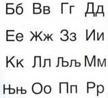

Nebudu vysvětlovat něco, co už stihli mnohokrát jinde (1, 2, 3, …), ani to komentovat (4, …). Chtěl jsem napsat článek, který by mi pomohl jednoduše vysvětlit známým, co že to Jabber je, proč to používám a navíc k tomu obsáhnout některé ony postřehy navíc, jež jsem časem nasbíral.
Těší mě, jmenuji se Jabber
Prvně něco o tom, co Jabber je. Proč o tom píšu. Milý čtenáři… Máš ICQ? Taková ta zelená kytička, program, který používáš na komunikaci s kamarády, když jsi u počítače? Pokud ICQ máš a používáš, nech si prosím vysvětlit, že to není jediný existující způsob jak podobně komunikovat s přáteli. Takových způsobů je mnoho a jmenují se jinak, i když fungují dost podobně. ICQ je však u nás nejrozšířenější a nejznámější. Jednou z alternativ k ICQ je Jabber. Funguje to stejně – seznam přátel, kteří si mohou psát rychlé zprávy, mají smajlíky a všechno možné.
Jiný…
Ano. Jabber je jiný. Neřešme prosím, jestli lepší nebo horší. Je jiný a někomu vyhovuje více, než ICQ (třeba mně). Z Jabberu se mohu nějakým způsobem připojit i na ICQ, takže když mi vyhovuje více Jabber, nemusím ztratit kamarády na ICQ. Protože to ale není spojení úplně dokonalé, nefunguje samozřejmě všechno. Na trase Jabber ↔ ICQ nefunguje přenos souborů, uživatelé Jabberu mají jiné smajlíky a nemají hry, které jsou v ICQ. Proto když mi pošleš soubor nebo si se mnou zkusíš zahrát hru, odpovím ti akorát, že se snažíš marně.
Proč to děláme?
Kde se bere nutkání používat Jabber a ne ICQ? Nejde jen o to být úžasně jedinečný a vyčuhovat z davu (či se přidat do méně davového davu). My, kteří do toho trochu vidíme, víme, že se přes Jabber nešíří viry, že si na povídání s kamarády můžeme legálně vybrat z mnoha prográmků ten, který nám vyhovuje nejvíce. Nemáme moc rádi kýčovité smajlíky a reklamní bannery a proto nám prográmek na ICQ nevyhovuje. Je toho více, ale tohle jsou asi věci, které se nám líbí nejvíce. Navíc, můžeme mít kromě kamarádů ve svém Jabberu i předpověď počasí, TV program, aktuální články z blogů a novin, překladové slovníky nebo třeba i velmi pohodlné SMS brány na O2 a Vodafone (není třeba opisovat žádná čísla apod. a není nutné nic platit). Holt se nám ve světe Jabberu líbí více.
Nebudu řešit, co je lepší a co horší. Mě vyhovuje Jabber. Neberte mi to a já vám nebudu brát vaše ICQ ;) . Jabber je prostě, jak říkám, jiný.
Google míchá kartami
Google má svůj e-mail a říká mu GMail. To možná víš. Možná taky víš, že součástí GMailu je i taková chatovací služba s ostatními uživateli GMailu. Ta se nazývá oficiálně Google Talk a světe div se, je to poddruh Jabberu ;) . Google si pro svůj vlastní komunikační nástroj vybral Jabber. Ale co, to není vše. On jej taky obohatil – přes Google Talk si můžeš klidně zavolat (jako to znáš třeba ze Skype).
Důležitá je ale jiná věc. Pokud máš Google Talk, můžeš si samozřejmě povídat i s ostatními, kteří mají Jabber. Jakýkoliv jiný Jabber. Pokud máš tedy ICQ a Google Talk, určitě se se mnou bav raději přes Google Talk, protože spojení bude přímější a funkce budou fungovat o mnoho lépe. Navíc, pro vlastníky Mirandy je krok k Jabberu tímto ještě jednodušší…
Pro vlastníky QIP
 Jeden postřeh pro vlastníky prográmku QIP. Pokud si se mnou chceš psát, postupuj prosím podle tohoto návodu. Všechny ostatní programy na ICQ a jemu podobné kecání jsou dostatečně inteligentní na to, aby zvládly přenos textu v podobě, jež nikde nedělá problémy. Ten tvůj však potřebuje nakopnout. Pokud se ti do toho nechce, pak mě se nechce luštit azbuku a ze svého seznamu tvůj kontakt vymažu.
Něco málo o ICQ
Nejsem příznivcem plamenných debat na téma „co je lepší“. Podle mě je slovo lepší špatné. Každý máme jiný vkus a jiné potřeby, jiné preference, priority. Proto každému sedne něco jiného. Respektuji to. Věci jsou jiné a lidé si vyberou tu, která jim sedne nejvíc.
ICQ nepoužívám proto, že mi nesedlo. Jak jsem psal výše, nelíbí se mi program a ani způsob, jak celá věc funguje. Argumentuje-li někdo tím, že nefunguje přenos souborů nebo nelze hrát ICQ hry, pak narazí. Jabber umí posílat soubory, jen ne na ICQ a z ICQ je přijímat. Což není v jeho povinnostech, ono vůbec to, že se z něj mohu na ICQ připojit, je vlastně laskavost. Hry na ICQ nejsou způsob, jakým bych chtěl trávit čas a stejně tak plácání o ničem a plýtvání časem. Jelikož mi v poslední době přijde, že velké procento uživatelů ICQ se chce se mnou bavit jen proto, že se nudí, nebo proto, že něco potřebuje, začínám pomalu ve svých hodnotách zavrhovat celou onu zelenou kytičku. Jistě, rád si popovídám s přáteli, s nimiž mám nějaký vztah, jejichž život mě zajímá a o které stojím. Ale některé „hovory“ o tomto nejsou – asi chápeš, o čem mluvím.
Také nemám rád, když si mě někdo přidá do kontaktů a ani mi neřekne proč. Odkud mě zná… Asi začnu na takové pokusy reagovat jednoduše zamítnutím a nebudu pátrat po tom, co je to za člověka.
Mám rád Jabber. Ne tak, abych si koupil tričko a lepil si po pokoji samolepky s logem Jabberu… Mám ho rád střízlivě :) . A tak nějak čím více mám rád Jabber, tím více omezuji své působení na ICQ. Nic s tím nenaděláš, je to má volba. Je možné, že jednou opravdu dojdu do stavu některých mých přátel, že ICQ přestanu používat úplně. Popravdě, byl bych tomu rád. Nakonec dodám něco zajímavého o ICQ, ale přijde mi to trochu… projabberovské…
 Kindle
Kindle